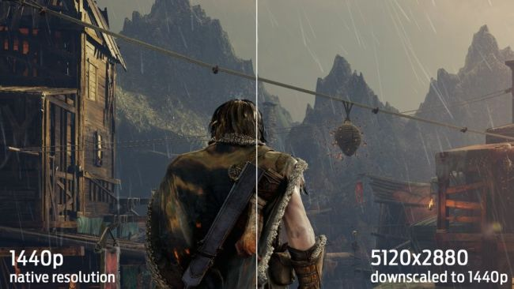

𝙋𝘾 𝙂𝙧𝙖𝙥𝙝𝙞𝙘𝙨 𝙊𝙥𝙩𝙞𝙤𝙣𝙨 𝙖𝙣𝙙 𝙍𝙚𝙨𝙤𝙡𝙪𝙩𝙞𝙤𝙣𝙨
Welcome to
Resolution
A pixel is the most basic unit of a digital image—a tiny dot of color—and resolution is the number of pixel columns and pixel rows in an image or on your display. The most common display resolutions today are: 1280x720 (720p), 1920x1080 (1080p), 2560x1440 (1440p), and 3840 x 2160 (4K or ‘ultra-HD’). Those are 16x9 resolutions—if you have a display with a 16x10 aspect ratio, they’ll be slightly different: 1920×1200, 2560x1600, and so on while newer ultrawide displays can be 2560x1080, 3440x1440, etc.
Upscaling and Downsampling
Some games offer a 'rendering resolution' setting. This setting lets you keep the display resolution the same (your display's native 1080p or 1440p, for instance) while adjusting the resolution the game is being rendered at (but not the UI). If the rendering resolution is lower than your display resolution, it will be upscaled to fit your display resolution—and, as expected, look like garbage, because the image is being blown up. If you render the game at a higher resolution than your display resolution, which is an option in Shadow of Mordor, the image will be downsampled (or 'downscaled') and will look much better at a high cost to performance.
Performance
Because it determines the number of pixels your GPU needs to render, resolution has the greatest effect on performance. This is why console games which run at 1080p often upscale from a lower rendering resolution—that way, they can handle fancy graphics effects while maintaining a smooth framerate.
Screen Tearing and V-Sync

V-Sync is what prevents screen tearing which is when the graphics card is not syncronising with the monitor. So it makes them syncronise by matching the frames the GPU is putting out to the refresh rate of the monitor